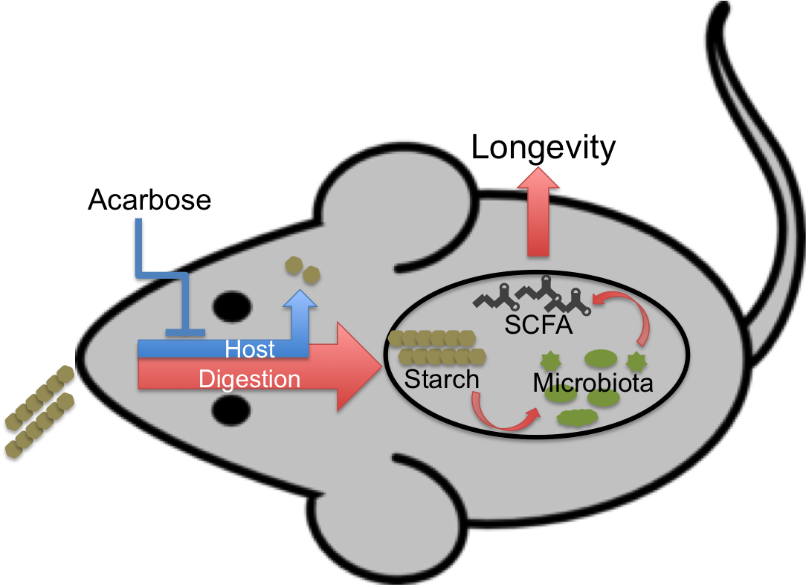

I'm excited to announce that we've posted a preprint of our latest manuscript to the bioRxiv, as well as submitted it for peer review to the open access journal Microbiome. I'll update this note if and when it gets accepted.
These days it seems like the only research more over-hyped than "microbiome" is longevity-enhancement. It is therefore with some trepidation that I have released into this world of buzz the first chapter of my dissertation, titled: "Changes in the gut microbiota and fermentation products associated with enhanced longevity in acarbose-treated mice."
Previous work (done by my co-authors on this paper as well as others) has conclusively demonstrated that treatment with the anti-diabetic drug acarbose substantially increases lifespan in mice (also). The magnitude of the effect in males—where it's the most pronounced—puts it on par with rapamycin and 17-α-estradiol, two drugs that have gotten heavy interest from the longevity-enhancement crowd. While the approximately 20% increase in median lifespan in males is not as big as dietary restriction (a whopping ~40% in several studies), and the effect is much less in females (only 5% give-or-take) this still represents an exciting potential therapy if it can be reproduced in humans.
More importantly, it represents another tiny toehold in the still inscrutable field of longevity science. (Disclaimer: I am not a longevity expert.)
To drive home how little we understand about longevity, not only do we have just a rudimentary understanding of how dietary restriction increases lifespan1, but we can't even say if acarbose (or any other therapy) has a similar mechanism of action. It seems reasonable to expect that it might; acarbose inhibits the enzymes that break down starch, reducing the uptake of glucose after a meal. However, the physiological response to long-term treatment with the drug is quite distinct from dietary restriction.
This discrepancy has inspired an alternative hypothesis: looking instead to the starch left undigested and that therefore enters the lower digestive system in much larger amounts. If this increased supply of substrate for microbial fermentation causes an increased production of "good" bacterial products—for instance short-chain fatty acids (SCFAs)—then this could result in improved health and, ultimately, longevity.

Features and limitations of our study
To explore this hypothesis, we have been very fortunate to collaborate with the National Institute on Aging's Interventions Testing Program (ITP), an ongoing multi-institutional study that trials promising anti-aging therapies in large mouse cohorts. The life-extending properties of acarbose were first observed in this study, and subsequent mouse cohorts have both confirmed the original finding and built on it.
My manuscript is based on the analysis of fecal samples from these mice, measuring the concentrations of three key SCFAs and other metabolites as well as the composition of the bacterial community. Longevity studies like these are challenging simply because you're waiting for your mice to die naturally. This is both time consuming and expensive; you need quite a few mice for statistical reasons, and they can live for years. To my knowledge, ours is the first study to combine characterization of the fecal microbiome with longevity measurement in normal, healthy mice. Another valuable feature of our study is the pairing of chemical analysis with community characterization in the same samples, presumably improving our ability to detect associations between bacterial taxa and their fermentation products.
Nonetheless, as with any research this study has crucial limitations and is only the first step in process of validating an exciting hypothesis.
-
First, we did not set out to test the central, causal claim of our model: that SCFAs in the gut increase lifespan. To do so would require experimental control of one or more of the three key SCFAs in the lower digestive system—acetate, butyrate and propionate—without independently affecting mouse physiology. While a useful manipulation, acarbose supplementation has other major effects (on blood glucose, for instance) and therefore does not qualify.
-
Second, by definition, the mice for which we obtained fecal pellets had survived up to the time of collection. Since samples were collected from mice nearing to the median lifespan of the control mice, our interpretation are therefore limited to old mice.
-
Third, this was a purely cross-sectional study with a single sample collected from each mouse. We can answer the most pressing questions without longitudinal sampling, but variation within each mouse, on the time-scale of hours, days, or weeks, surely introduced noise and decreased our statistical power.
-
Finally, we only measure chemical and community composition in feces. While this is an effective proxy for the gut microbiome, and a huge fraction of studies accept this shortcoming, it is important to remember that fecal SCFA concentrations may not reflect bacterial production, nor exposure of the gut and other host tissues to these compounds.
Interesting findings
Our study explores predictions of the hypothesis that acarbose increases longevity via the bacterial production of short-chain fatty acids, finding that:
- acarbose treatment modifies the composition of the gut microbiota,
- variation in the abundance of particular bacterial community members is associated with variation in the concentration of fermentation products,
- one or more of the major SCFAs are increased in the feces of acarbose treated mice, and
- SCFA concentrations are associated with mouse lifespan.
While our model does not supersede the more mainstream hypothesis that acarbose acts to increase longevity through its effects on glucose homeostasis pathways, our work is important support for an alternative model in which the microbiota plays a central role.
If you want to know all the juicy details, read the paper. Here, however, I want to expand a little bit on some of the less obvious bits that I think are worth your attention.
Quantification of bacterial density
An interesting methodological feature of our 16S rRNA gene survey is the inclusion of an internal DNA standard for the purpose of comparing the absolute abundance of the bacterial population between samples. This approach has been published in the past (here and here), but is not widely implemented. Normally, sequence based surveys of bacterial communities are limited to comparing the relative abundance of particular amplicons. By spiking in a known amount of defined DNA—in this case 10 μL of a stationary phase culture of Sphingopyxis alaskensis—we can compare population density of bacteria per gram of feces based on the recovery rate of the exogenous 16S gene. Since we can uniquely identify and remove the foreign sequence, this approach is fully complementary to a relative-abundance based analyses.
We use this tool to confirm that observed increases in the relative abundance of several taxa reflect increases in their population size, rather than the decreased abundance of other bacteria, a distinction that is impossible to make with standard survey methods.
In this study we did not attempt to quantify the density of bacteria in the spike itself, which means that our abundance estimates are in units of spike-equivalents rather than gene copies. This does not affect our interpretations, although it can create challenges for communication. We skipped this step because it is probably not possible to accurately estimate cell counts in the endemic community based on 16S rRNA gene density. Extraction and amplification efficiency, as well as 16S rRNA gene copies per cell, vary among species. Instead we depend on an assumption of per cell copy number invariance in the community on average, as well as in the specific taxa being assessed. For this reason, we've opted to use "spike-adjusted abundance" as a euphemism for the estimate.
I plan to write more about this approach in the future. For now I'll just say it was a small, but valuable feature of our study.
Identification of bacterial function
Another interesting method that I'm proud to have included was a LASSO regression of metabolite concentrations on taxon abundances. Our reason for doing this was the belief that the bacteria most strongly correlated with particular fermentation products were the most likely to be producing them. This naïve approach appears to have paid off; the method identified contenders for these functional roles that, in many cases, match a priori expectations. For instance, the most abundant Lactobacillus was closely associated with lactate concentrations. (Surprised?) Likewise, the dominant members of the Muribaculaceae appear to be predictive of propionate concentrations, matching functional annotations of genomes from this family.
There are almost certainly better methods for discovering the taxa that produce particular metabolites, but LASSO regression is a surprisingly simple approach and sufficient to demonstrate a relationship between bacterial abundances and SCFAs, while being (theoretically) more robust to other sources of co-linearity.
A reproducible paper
Besides the joy of having contributed to SCIENCE, I am also proud to declare that the results2 in our manuscript are recreate-able by sufficiently interested readers. Raw sequence data are available from the SRA, and everything else—HPLC peak area tables, mouse survival data, and all of the relevant metadata—can be found in a public GitHub repository. That repo also comes with all of the pipeline code, implemented as scripts and a Makefile, for raw data processing.
For anyone who doesn't want to install a bunch of software and
reserve about a hundred hours of CPU time
to reprocess our sequences, intermediate results are available in a preloaded
SQLite database.
Finally, Jupyter notebooks with code to reproduce published figures and
statistics have also been included.
I'm not providing a prepared container, unfortunately, and some of the
required software can be challenging to install.
Once that's done, though, the Makefile is designed to generate the finished
paper with a single invocation of make paper!
While there's an "official", current release of that repository, checkpointed by Zenodo, I may implement patches if they make results easier for readers to recreate. If anyone out there wants to get really crazy, I'll even take pull-requests!
This manuscript is a key chapter of my PhD thesis, and I'll be building off of the findings in subsequent work. So stay tuned!
Read the paper.
Run the code.
Let me know what you think.
-
Quote: "The mechanisms mediating the health benefits of DR are not fully understood in any organism." ↩
-
Except for one: Our supplemental materials do not included the code needed to recreate the first figure, survival curves demonstrating that the population of mice from which we sampled recapitulate the sex-specific longevity effects of acarbose. This result was computed by a collaborator and uses longevity data that will be released with a different paper, currently in preparation. I believe that this particular result is a relatively minor part of our story, confirming a previously observed, and well established, pattern. ↩
Comments